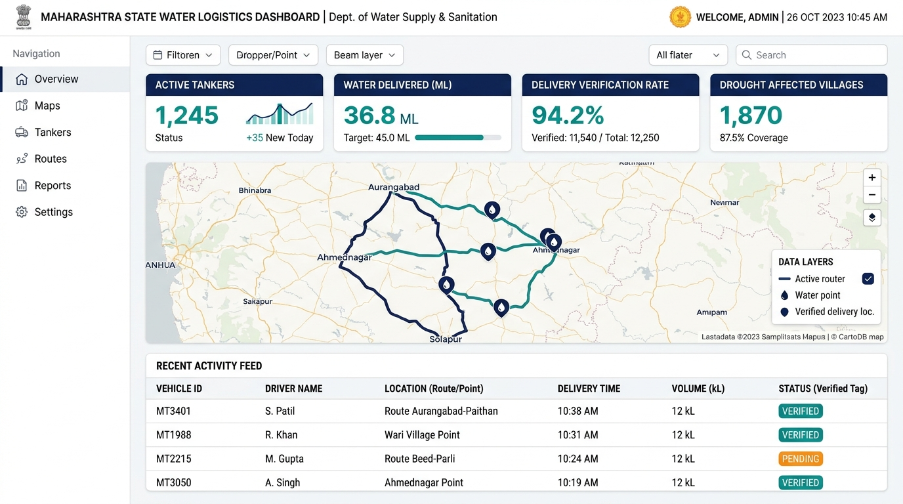

Guaranteed Clean Water For Every Drought-Hit Village
JalSanchar tracks rural water tankers using GPS telemetry and dual QR verification to prevent diversion and ensure rural families get their fair share of clean drinking water.

Satellite radar & soil sensors detect groundwater depletion 2 weeks early.
Algorithmic dispatch guarantees 40L per person and 70L per livestock daily.
Dual QR code handshake at village cistern confirms delivery before payment release.
Why Traditional Rural Water Supply Fails
During seasonal droughts, millions of liters of public drinking water are diverted, delayed, or unverified. JalSanchar fixes three fundamental breakdowns:
Without cryptographic verification, water tankers frequently divert public emergency water to unauthorized industrial buyers, leaving remote village tanks empty.
Traditional administration only reacts after village wells run bone dry. Citizens are forced to wait days for emergency tenders and logistical approval.
Panchayat leaders spend hours submitting physical complaints to Taluka offices. Lack of transparent digital audit trails delays emergency tanker authorization.
How JalSanchar Solves the Water Crisis
A reliable 3-stage process combining satellite intelligence, GPS tracking, and QR verification.
1. Early Shortage Warning
Using weather radar and NASA SMAP satellite data, we predict which village wells will run dry up to 14 days in advance, so water tankers are sent before taps run completely dry.
2. Stop Water Theft & Diversion
Tanker drivers must scan a time-bound QR code at the village water tank with local Gram Panchayat officials. If a tanker deviates 500m off-route, payment is frozen automatically.
3. Fair Daily Water For Everyone
Smart route optimization guarantees at least 40 liters daily for every person and 70 liters for cattle, ensuring even the most remote hamlets receive timely deliveries.
Designed for Rural Reality and Governance
Dedicated interfaces for district officers, village panchayat representatives, tanker drivers, and citizens.
District Collector
Live GIS tanker fleet monitoring, contractor escrow payment releases, drought severity indexes, and automated dispatch control.
Gram Panchayat
Simple task-based camera scanner for village cisterns. Confirm tanker arrival, attest water volume, and log shortage alerts.
Tanker Driver
Offline turn-by-turn route directions, GPS location broadcast, digital trip log, and dynamic delivery verification QR generator.
Public Audit
Publicly verifiable delivery receipts, escrow ledger status, route deviation alerts, and open water distribution reports.
Built for Resilient Field Operations
JalSanchar runs on low-bandwidth 2G/3G mobile networks, works completely offline when tankers cross remote valleys, and syncs cryptographically signed logs when connectivity returns.
Satellite Hydrology Telemetry
Copernicus Sentinel-2 & NASA SMAP moisture sensors feed groundwater forecasts directly into village risk tiers.
OR-Tools Vehicle Routing
Google OR-Tools optimizes tanker routes across clustered villages, minimizing fuel burn and turnaround delays.
Cryptographic Dual Handshake
HMAC-SHA256 signatures ensure that delivery tokens cannot be fabricated or reused by rogue suppliers.